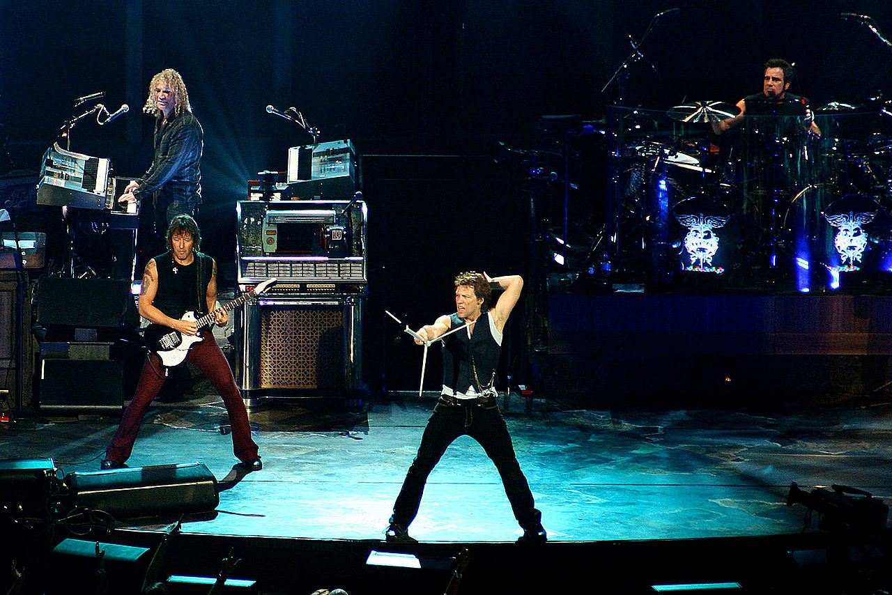
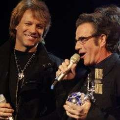
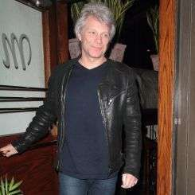

hoofdstuk 1: Biografie
Oprichting tot 7800° Fahrenheit (1982 - 1985)
Frontman Jon Bon Jovi (echte naam: John Francis Bongiovi) begon op 13-jarige leeftijd met gitaarspelen.
Op die leeftijd begon hij ook zijn eerste bandje, Raze. Toen hij 16 was, ontmoette hij David Bryan op de
Sayreville War Memorial High School. Met hem richtte hij de rhythm-and-blues-coverband Atlantic City Expressway op.
Ze speelden in bars in New Jersey. In zijn latere tienerjaren speelde Jon in de band John Bongiovi and the Wild Ones,
waarmee hij ook weer vooral in New Jersey speelde. Met deze band stond Jon in voorprogramma's van bekendere lokale bands.
In de zomer van 1982, toen hij van school af was en in deeltijd werkte, kreeg Jon een baan bij de Power Station Studios,
een New Yorkse muziekstudio waarvan zijn achterneef Tony Bongiovi mede-eigenaar was. Hier maakte Jon een aantal demo's
die hij naar verschillende platenmaatschappijen stuurde, maar zonder succes.

Toen Jon 19 was, zong hij "R2-D2 We Wish You a Merry Christmas" op een Star Wars-kerstalbum, Christmas in the Stars,
met muziek van John Williams, geproduceerd door Tony Bongiovi van Power Station. In 1983 schreef een lokaal radiostation
een wedstrijd uit om zo de beste band zonder platencontract te vinden. Jon won met het nummer "Runaway", dat hij al in
1980 had geschreven en waarvan de muziek werd verzorgd door musici van de studio.

Het nummer werd al gauw populair in New York en omstreken. De studiomusici die Jon hielpen met "Runaway" gingen door het
leven onder de naam The All Star Review. Deze groep bestond uit Tim Pierce (gitaar), Roy Bittan (keyboard), Tony Laroca (drums)
en Hugh McDonald (basgitaar). Door de populariteit van "Runaway" had Jon een band nodig. De huidige leden van Bon Jovi
hadden elkaar allemaal al weleens ontmoet, maar het duurde tot maart 1984, nadat "Runaway" op nummer 39 kwam te staan
in de singles-hitlijst, voor ze bij elkaar kwamen. Bon Jovi was geboren, met naast Jon zelf als line-up David Bryan,
Alec John Such en Tico Torres.
Een aantal gitaristen volgde elkaar toen op, onder wie Dave Sabo, die later voor Skid Row ging spelen. Uiteindelijk kwam
Richie Sambora bij de band. Voordat hij bij Bon Jovi ging, toerde Richie met Joe Cocker, speelde hij bij de band Mercy en
had hij net auditie gedaan voor Kiss. Hij speelde ook op het album Lessons met de band Message.
Tico Torres was toen al een ervaren muzikant. Hij jamde bij Miles Davis en speelde live met de Marvelettes en Chuck Berry.
Hij had al op ongeveer 26 albums gespeeld en had net het derde album met Frankie and the Knockouts opgenomen.
Dit was een band uit New Jersey die begin jaren 80 een aantal hits had.
Toen ze een keer in het voorprogramma van de band Scandal stonden, werden ze opgemerkt door PolyGram. Hun debuutalbum kwam
uit op 21 januari 1984. Dit album werd meer dan 500.000 keer verkocht, en kwam ook in het Verenigd Koninkrijk uit.
In 1985 verscheen het in korte tijd opgenomen tweede album, 7800° Fahrenheit. Ondanks dat het door fans gewaardeerd wordt,
was het commercieel geen groot succes.
